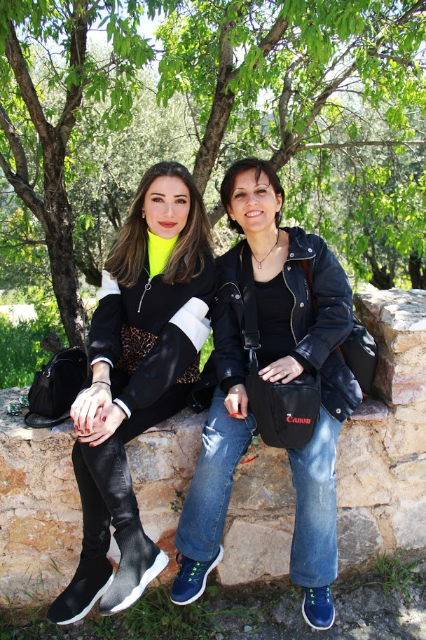
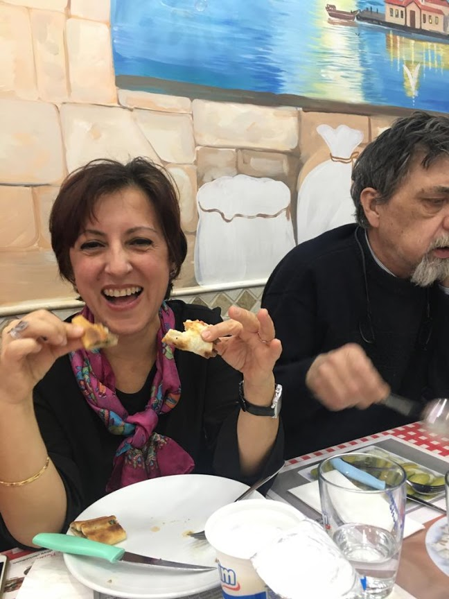
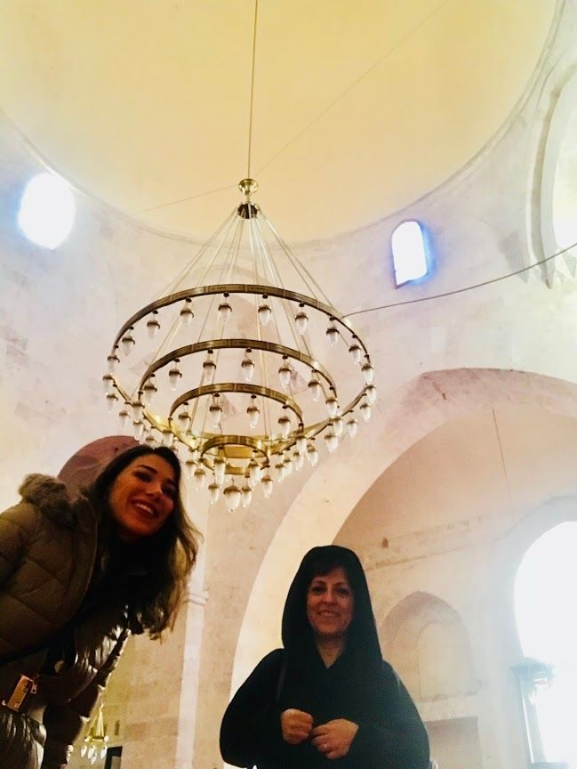
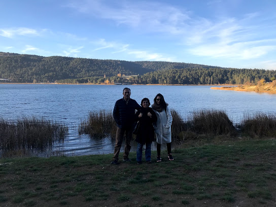
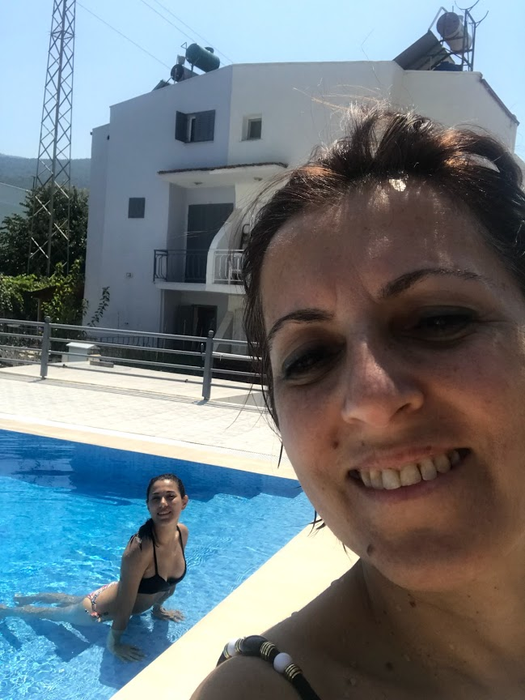

Kendi dilimde annim.
Hayatta en çok sevdiğim, diğer yarım. Canımın içi.
Aynı zamanda nefretim, öfkem, saldırgan tarafım.
Biliyorsun ki; çocuk, sevgiyi ve nefreti aynı kişiye, en yakınındakine yani anneye yöneltmeye meyillidir. Ben de senin büyüyemeyen çocuğun olarak tüm kompleks duyguları bir arada yaşıyorum. Aslında bu yüzden diyorum ya, sen benim hem özgürlüğüm hem tutsaklığımsın. Hem en huzurlu ve en güvende hissettiğim, hem de koşa koşa kaçmak istediğim. (Freud’u suçla, beni değil.) Hayat canımı yakarken ağlaya ağlaya sığındığım. Aslında hayatta her şey denge ve uyumdan ibaret. Her şey kontrastıyla beraber var oluyor. En basit ve acımasız örneğiyle, yaşam ve yakın zamanda yaşadığımız ölüm gibi.
Dünyanın kelime anlamı alçak demek. Biliyor muydun? Dünya çok alçak bir yer. Benim gibi hassas insanlar içinse tam bir cehennem. Bu yüzden sana çok kızıyorum. Sanırım beni dünyaya getirdiğin için bir yanım seni hiç affedemeyecek. Hasta bir çocuk dünyaya getirdiğin ve beni bu gerçeklikle savaşmak zorunda bıraktığın için. Bu kadar haksızlığın olduğu bir dünyaya bir de hasta bir çocuk getirmek de ne cüret? Nasıl bir ihmalkarlık? Hayatı boyunca taşıyacağı long-term hafızasında kalıcı hasarlar oluşturmak? Hasta olduğu için her istediğini yapmak? Ona balık tutmayı öğretmemek aksine her ağladığında beslemek? Okulda arkadaşlarından ayırmak? Gerçeği çarpıtmak, ölümleri saklamak, yalanlar söylemek? Yas tutmasına izin vermemek? Vücudunun tüm deliklerinden bir şeyler sokmak? Hiç uzamasına izin vermediğin saçlarımı kökünden kestirmek? Beni ilaçlarla şişirip, çirkin ördek yavrusu haline getirmek? (Bu arada ben hiçbir şeyin tesadüf olduguna inanmıyorum. Adımın Suna olması da burdan geliyor bence. Daha ben doğmadan belliymiş ördekliğim.) Hayatta her verdiğim karara karışmak? Kolumu ısırmak, bana terlikler fırlatmak? Beni kendine bağımlı hale getirmek?... Greta’nın konuşması gibi. How dare you? (Bu ne cesaret?)
Yazdıklarıma kızma. Denge dedik. Her şey mükemmel olamaz. Hepimiz griyiz. Sen hep söylersin, hayatta sadece siyah ve beyaz yok diye, unuttun mu?
AMA, tüm bunlardan daha çok sana kocaman bir teşekkür borçluyum. Hatta bu öyle bir teşekkür ki, kısıtlı kelimelerimle hissettiklerimi yansıtamayacağım icin endişelendiğim, burada artçılarını yazdığım içimde depremini yaşadığım bir teşekkür. Ama izin verirsen denemek istiyorum:
Herkes giderken, sen kaldığın icin.
Herkes bana deli derken; ruhumun ızdırabını, içimdeki yangını gördüğün için.
Benimle beraber ağladığın için.
Babamın bile beni anlamadığı, parayla eğitmeye çalıştığı zamanda, seni zorladığım seçimlerde bile elimi bırakmadığın için.
Çok korkmana rağmen hayatta en çok istediğim şeye, Arya’ya izin verdiğin için.
Hayvan sevgimi anladığın için.
Eğitimim, tedavim.. Bana olan sonsuz maddi desteklerin için.
Bana kendi evimi verdiğin için.
Tüm aşk acılarımı benimle yaşadığın için.
Ananem ve biricik dedecim için.
Hiç sıkılmadan beni her an dinlediğin için.
O hiç bitmeyen sıkıcı öğütlerin için.
Beni koruduğun için.
Özgürlüğüme kanatlanmama izin verdiğin için.
Karanlığın içinde aydınlıklar olduğunu gösterdiğin için.
Tünelin ucundaki ışık oldugun için.
Beni faşizmden kurtardığın icin (olabildiğince)
Herkes 2020’ye küfrederken, benim içimdeki virüsü yenmemi sağladığın için.
Ve her şeye rağmen, hayatın yaşanmaya değer bir yer olduğunu gösterdiğin için.
30 SENE BOYUNCA BENDEN ASLA VAZGEÇMEDİĞİN İCİN SANA ÇOK TEŞEKKÜR EDERİM. Sen olmasan, ben çoktan pes etmiştim. Ben de senden asla vazgeçmeyeceğim. Söz veriyorum.
Nice senelere annem.
Yeni yaşın çok sağlıklı, bol hayvanlı, bol doğalı, bol aşklı, bol huzurlu, bol yogalı olsun. Seni seviyorum.
Doğum günün kutlu olsun!
Ceren
Trowbridge/ UK Korona günleri